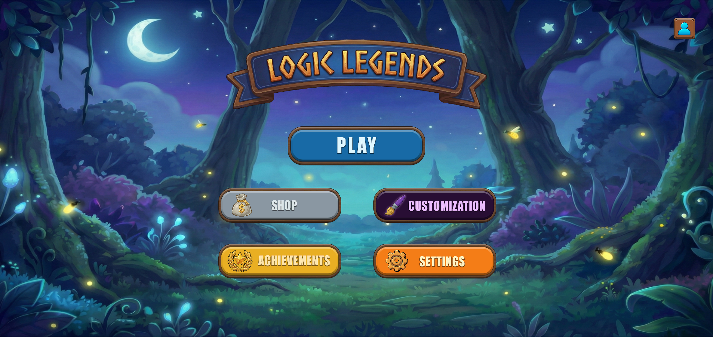
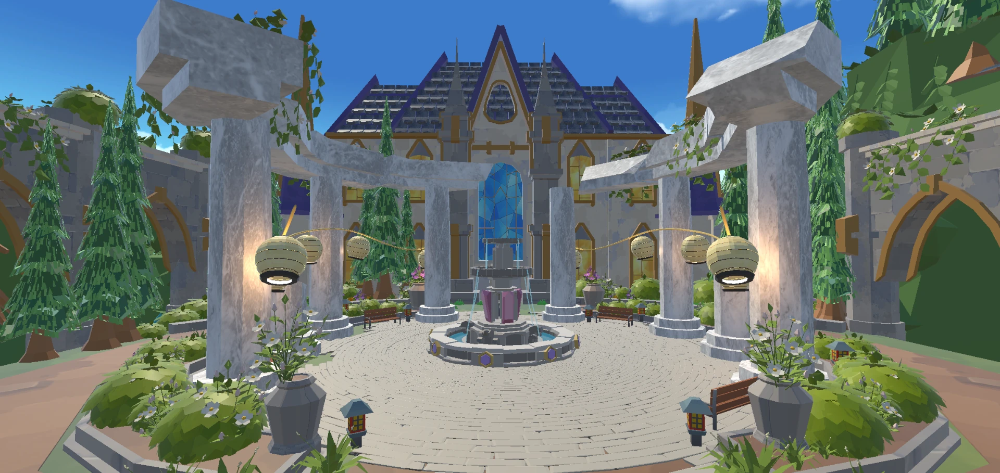
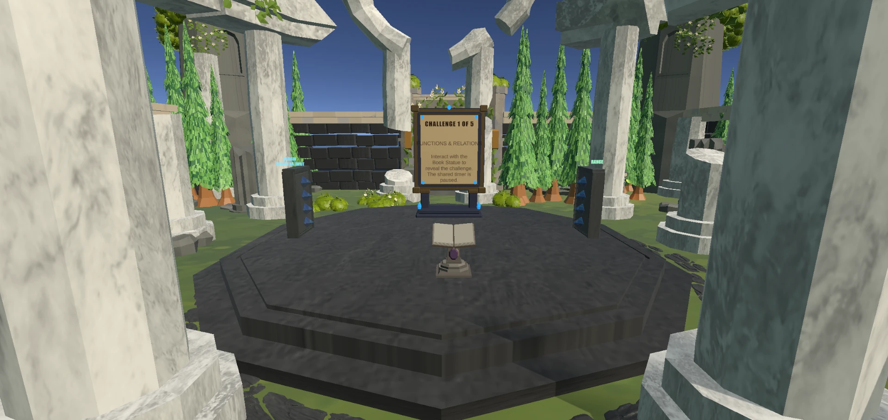
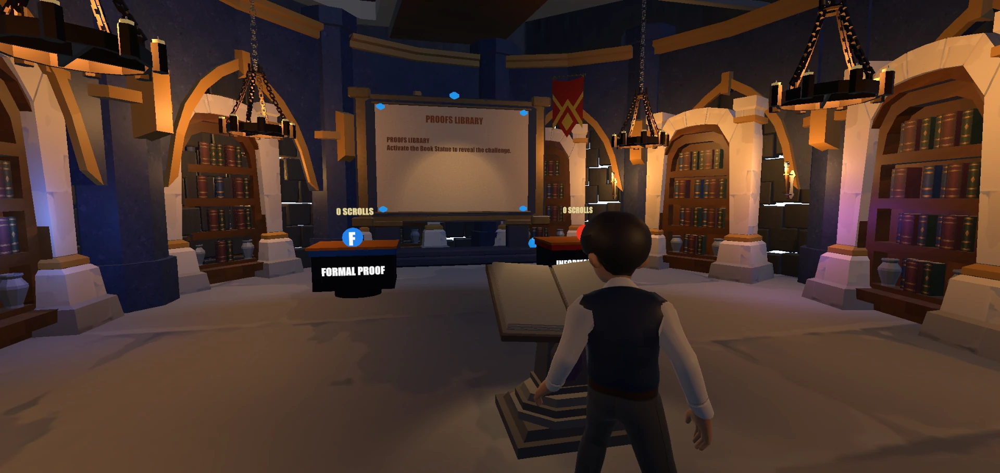
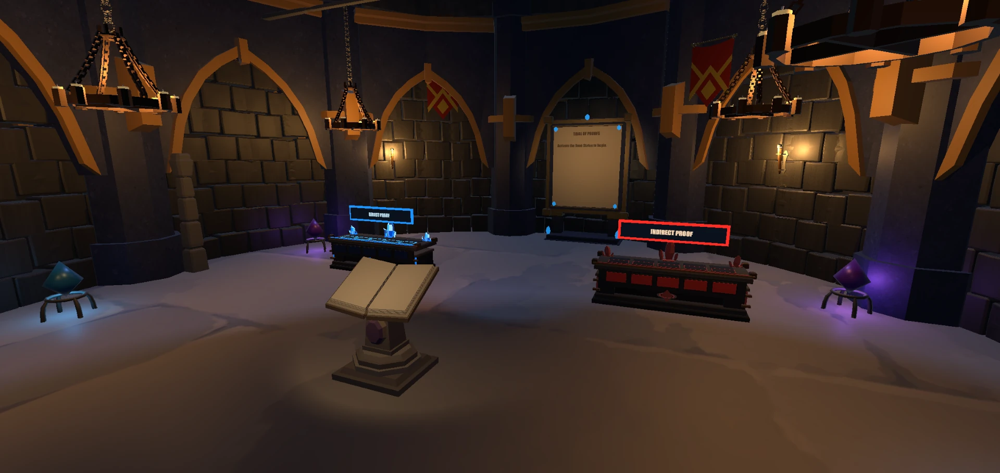
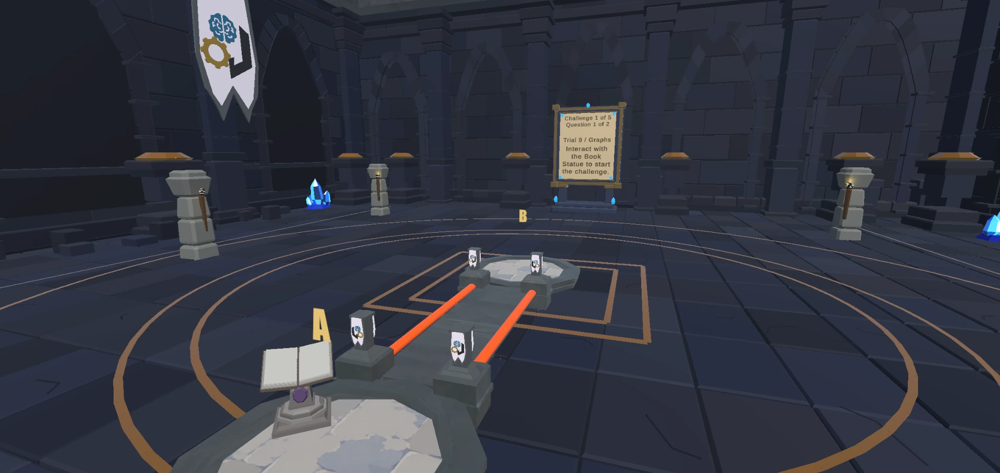
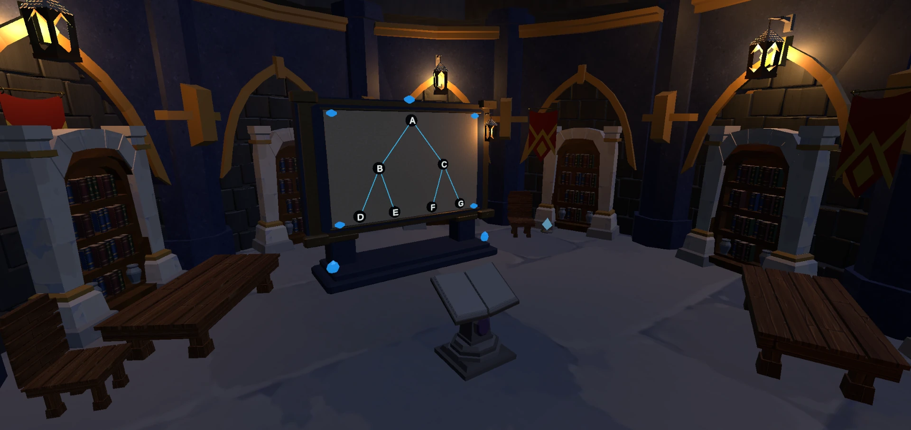
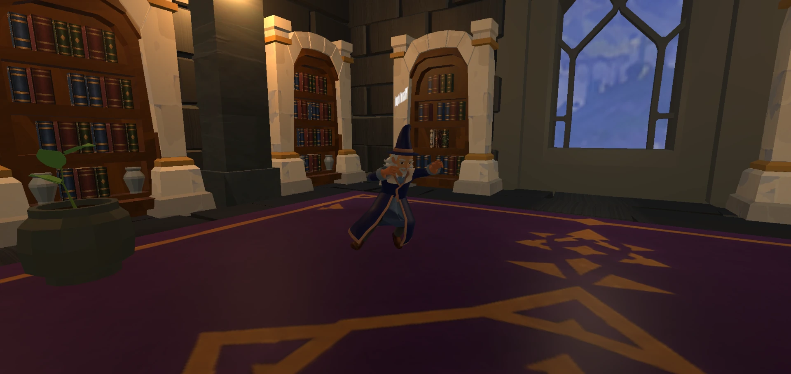

01Trials 1–3
The Awakening
- Propositional Logic
- Truth Table
- Rules of Inference
A fantasy adventure through discrete mathematics
Step into a realm where curiosity leads the way. Unravel the solo trials, sharpen your reasoning, and uncover the mathematics woven into every challenge.
The adventure
Logic Legends turns discrete mathematics topics into interactive solo trials. Walk through stylized environments, approach book statues and puzzle boards, and work through questions about logic, proofs, sets, mappings, graphs and trees.
Each trial gives you a focused topic to explore. In-game help and study books give you a place to review concepts before trying again.

Play solo
Solo stage selection is organized into four groups. Select a topic to enter its scene and work through its challenges.

Explore & study
The Logic Garden is a separate place to explore and learn. Follow its introduction, find the study library, and open books that explain the topics found in the solo trials.
The library covers propositions and truth tables, proof methods, sets and relations, then graphs and trees.
Game features
Take on a trial, learn something new, and bring your own style to the adventure.
Journey through four chapters of discrete mathematics, from propositional logic and proof methods to graphs and trees.
Discover the trialsWork with truth tables, arrange proof steps, connect mappings and solve graph and tree challenges in interactive 3D spaces.
Take a break from the trials. Explore the courtyard, meet the wizard and browse study books organized by academic term.
Visit the gardenCreate a private multiplayer lobby, share its code with friends, chat with your group and ready up for your next challenge.
Choose your character's look, preview outfits in the shop and equip the clothing you own through Customization.
Visit the Achievements menu to explore milestones across individual stages and academic terms as you continue your journey.
See it in action
Step inside Logic Legends. Explore the places, meet your guide and discover the challenges waiting along the way.
Wander past the fountain and lantern-lit columns before heading into the study library.

Explore the mapping courtyard and work with domain and range stations to connect inputs and outputs.

Step into the Proofs Library, read the arguments and decide what makes a proof formal or informal.

Enter the Trial of Proofs and build your reasoning at the blue and red proof altars.

Discover the graph chamber, where connected platforms turn vertices, edges and routes into a space to explore.

Study the tree board in this lantern-lit chamber and work through the relationships between its nodes.

Meet the wizard among the bookshelves and revisit the ideas behind your next solo trial.
Ready to play?
Your next discovery is a tap away. Get Logic Legends for Android and turn your curiosity into a new adventure.
Download GameSign in to send feedback.